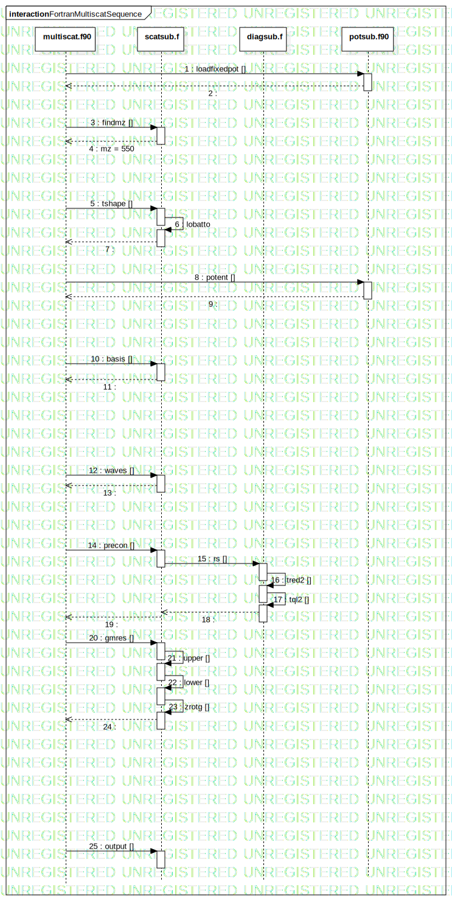

FlowChart
UMLInteraction
FortranMultiscat
::
FlowChart
Description
none
Diagrams

FortranMultiscatSequence
Participants
multiscat.f90
scatsub.f
diagsub.f
potsub.f90
Messages
loadfixedpot [] (multiscat.f90→potsub.f90)
(potsub.f90→multiscat.f90)
findmz [] (multiscat.f90→scatsub.f)
550 (scatsub.f→multiscat.f90)
tshape [] (multiscat.f90→scatsub.f)
lobatto (scatsub.f→scatsub.f)
(scatsub.f→multiscat.f90)
potent [] (multiscat.f90→potsub.f90)
(potsub.f90→multiscat.f90)
basis [] (multiscat.f90→scatsub.f)
(scatsub.f→multiscat.f90)
waves [] (multiscat.f90→scatsub.f)
(scatsub.f→multiscat.f90)
precon [] (multiscat.f90→scatsub.f)
rs [] (scatsub.f→diagsub.f)
tred2 [] (diagsub.f→diagsub.f)
tql2 [] (diagsub.f→diagsub.f)
(diagsub.f→scatsub.f)
(scatsub.f→multiscat.f90)
gmres [] (multiscat.f90→scatsub.f)
upper [] (scatsub.f→scatsub.f)
lower [] (scatsub.f→scatsub.f)
zrotg [] (scatsub.f→scatsub.f)
(scatsub.f→multiscat.f90)
output [] (multiscat.f90→scatsub.f)
Properties
Name
Value
name
FlowChart
stereotype
null
visibility
public
isReentrant
true
Owned Elements
FortranMultiscatSequence